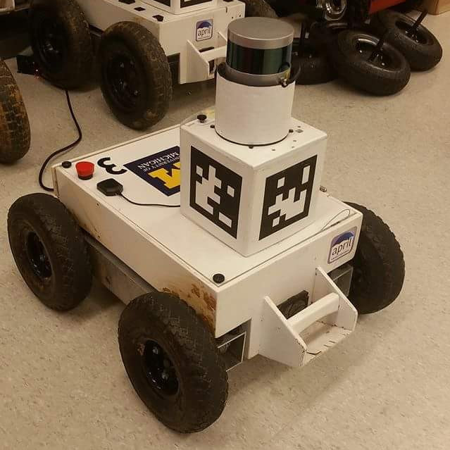

Happy 4th! It was my birthday this week and I celebrated with cake and robots. This week I went over the Iterative Closest Point algorithm. This is an algorithm that helps robots navigate through their environment without getting lost.

This is a robot in the lab that uses ICP to help navigate. I spent a lot of time controlling the robot and understanding how this robot in particular navigates.
Week 6
Happy 4th! It was my birthday this week and I celebrated with cake and robots. This week I went over the Iterative Closest Point algorithm. This is an algorithm that helps robots navigate through their environment without getting lost.
This is a robot in the lab that uses ICP to help navigate. I spent a lot of time controlling the robot and understanding how this robot in particular navigates.